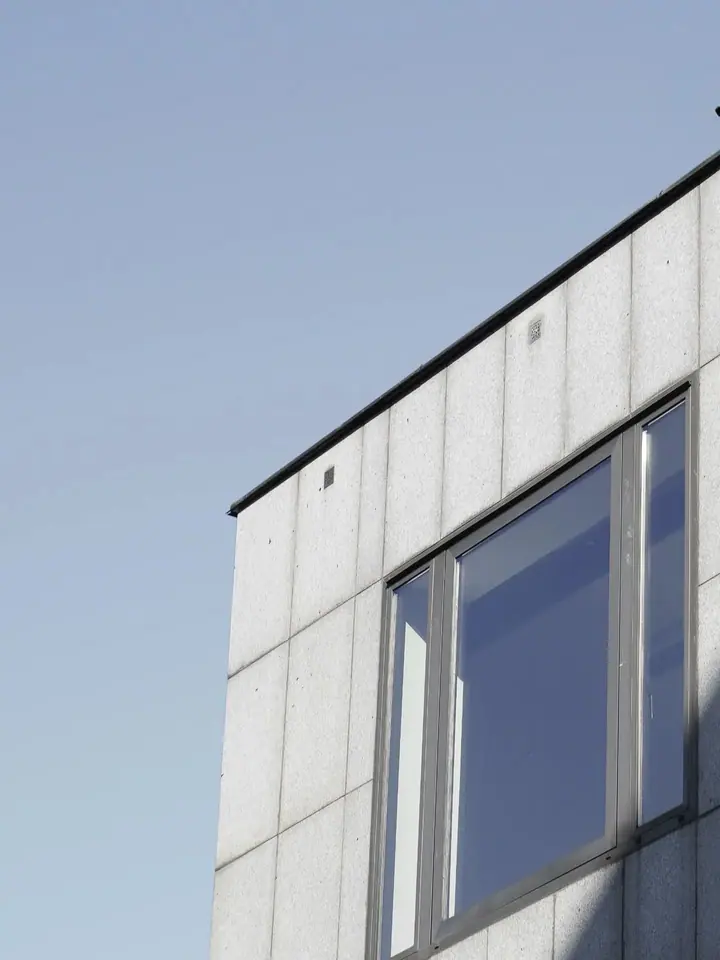
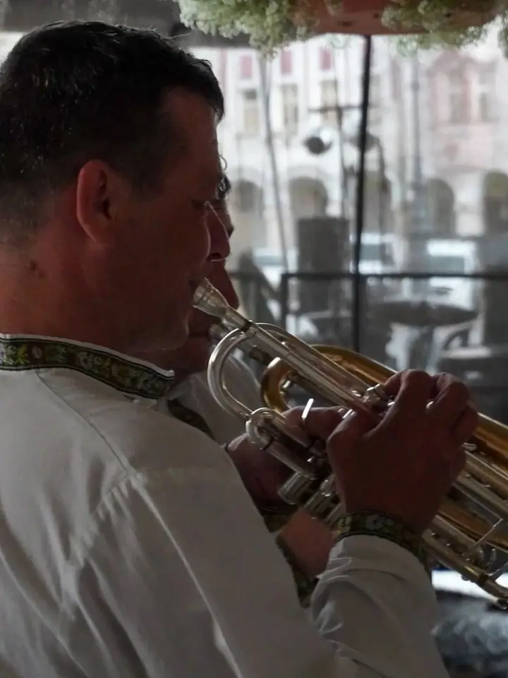
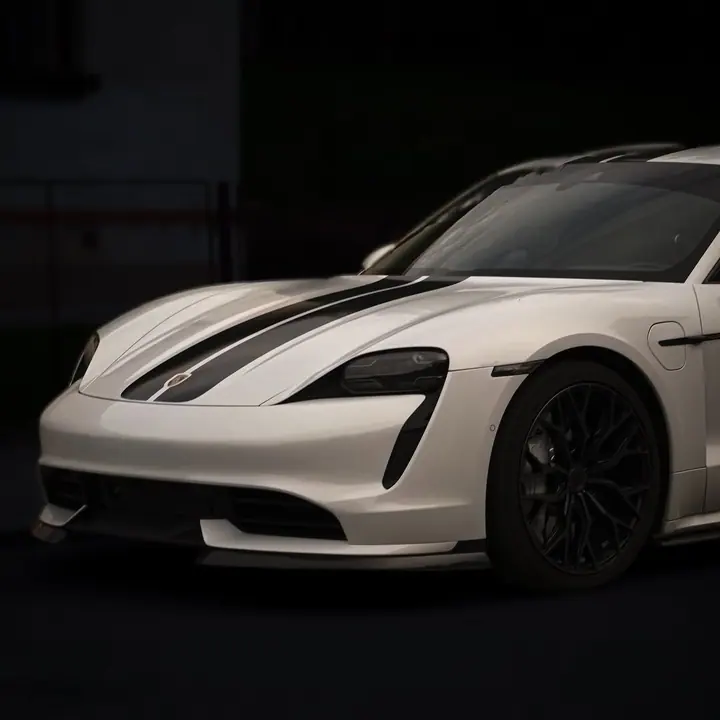
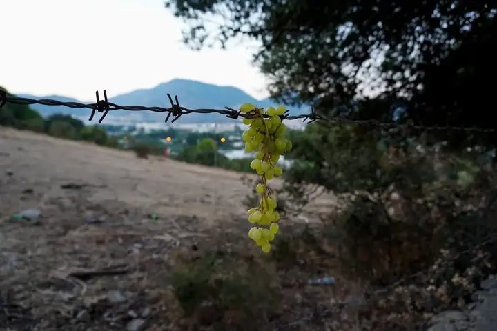
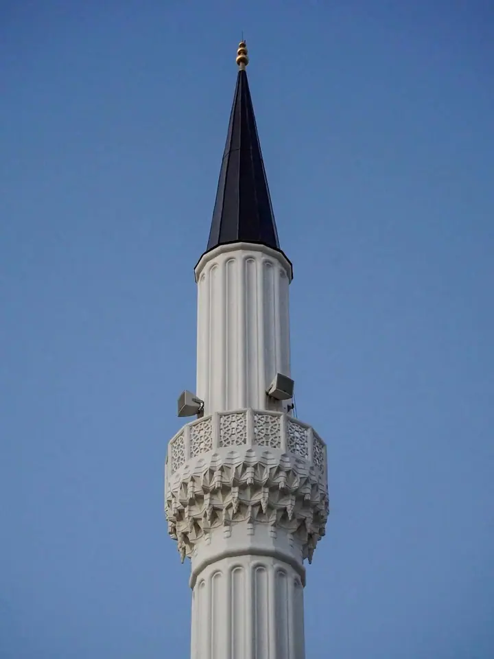
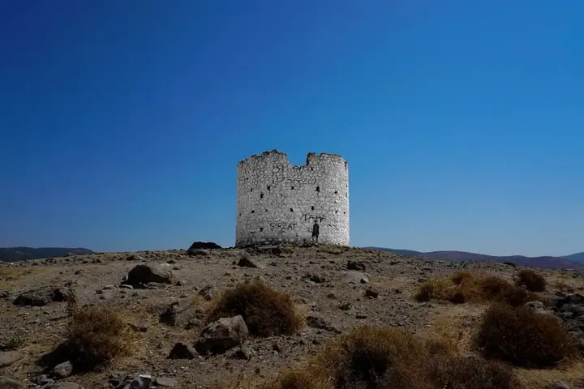
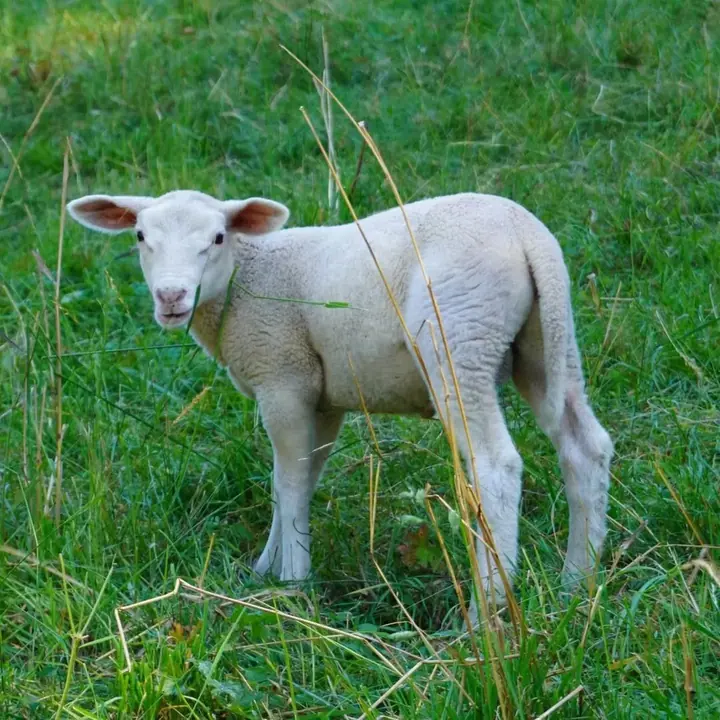

01 / 03
Fotografie
Fotím města, architekturu, krajinu, auta i lidi při akcích. Ukázky najdete v portfoliu na mém webu.
Zeptat se na termín→






Fotografie a video z Trutnova
Zeptat se na termín →(01) Ahoj
Jmenuji se Petr Plecháč a jsem fotograf a tvůrce videí z Trutnova . Fotím města, krajinu, auta i lidi při akcích a k fotkám přidávám video a grafiku .
(02) Co dělám
01 / 03
Fotím města, architekturu, krajinu, auta i lidi při akcích. Ukázky najdete v portfoliu na mém webu.
Zeptat se na termín→02 / 03
K fotkám a videím dělám i grafiku, takže všechno může mít jednotný vzhled.
Zeptat se na termín→Dále nabízím
Kromě fotek natáčím a stříhám videa. Hodí se tam, kde jedna fotka nestačí.
↗(04) Postup
Od první zprávy po hotovou galerii.
Krok 1 z 4
Ozvěte se e-mailem nebo přes Instagram a krátce popište, co potřebujete.
Krok 2 z 4
Probereme, jestli chcete fotky, video, grafiku nebo jejich kombinaci, a domluvíme termín i místo.
Krok 3 z 4
Přijedu na místo a nafotím nebo natočím, co jsme si domluvili.
Krok 4 z 4
Fotky upravím, video sestříhám a hotové výstupy vám předám.
Fotka, video i grafika z jedné ruky.
(05) Za objektivem
Jmenuji se Petr Plecháč, fotím a natáčím v Trutnově a okolí. Baví mě dívat se kolem sebe pozorně: na linie budov, na detaily, které člověk snadno přejde, na světlo na kapotě auta nebo na muzikanta, který zrovna hraje.
Mým oborem jsou multimédia, ke kterým mě přivedla SSUP v Ústí nad Orlicí. Proto se nedržím jen fotografie. Natáčím videa a dělám grafiku, takže vám můžu připravit fotky, video i vizuál z jedné ruky.
Na mém webu si můžete projít portfolio rozdělené na fotografie, videotvorbu a grafiku. Když vás něco zaujme, napište mi a domluvíme se, co potřebujete.
Petr
Petr Plecháč · Fotograf a tvůrce videí
Ano, věnuji se fotografii i videotvorbě, takže obojí zvládnu na jedné akci.
Jsem z Trutnova, takže nejčastěji fotím tady a v okolí. Kam dál vyrazit, se domluvíme.
Na mém webu je portfolio rozdělené na fotografie, videotvorbu a grafiku. Další fotky přidávám na Instagram.
Cena záleží na rozsahu a typu zakázky. Napište mi, co potřebujete, a pošlu vám nabídku.
(07) Kontakt
Napište pár vět o tom, co si představujete, a termín, který se vám hodí.
plechacpetr11@gmail.com